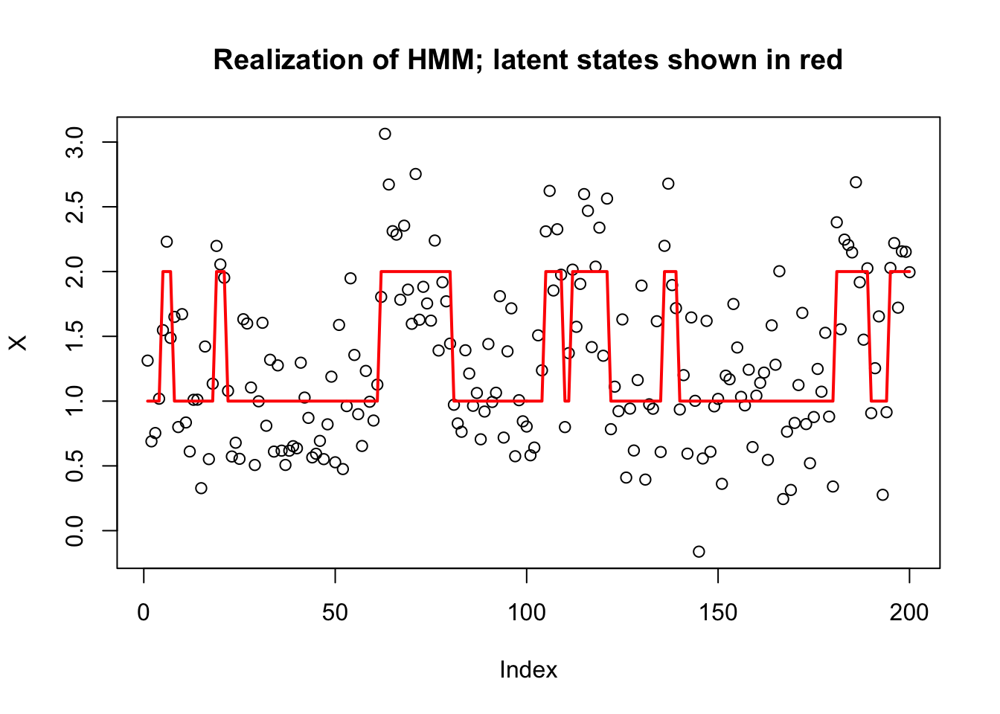
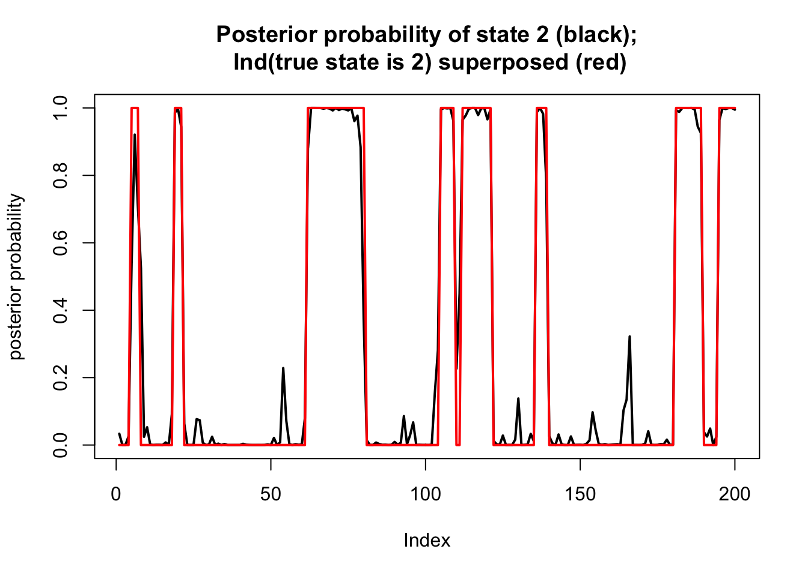

Last updated: 2022-05-19
Checks: 7 0
Knit directory: fiveMinuteStats/analysis/
This reproducible R Markdown analysis was created with workflowr (version 1.7.0). The Checks tab describes the reproducibility checks that were applied when the results were created. The Past versions tab lists the development history.
Great! Since the R Markdown file has been committed to the Git repository, you know the exact version of the code that produced these results.
Great job! The global environment was empty. Objects defined in the global environment can affect the analysis in your R Markdown file in unknown ways. For reproduciblity it’s best to always run the code in an empty environment.
The command set.seed(12345) was run prior to running the code in the R Markdown file. Setting a seed ensures that any results that rely on randomness, e.g. subsampling or permutations, are reproducible.
Great job! Recording the operating system, R version, and package versions is critical for reproducibility.
Nice! There were no cached chunks for this analysis, so you can be confident that you successfully produced the results during this run.
Great job! Using relative paths to the files within your workflowr project makes it easier to run your code on other machines.
Great! You are using Git for version control. Tracking code development and connecting the code version to the results is critical for reproducibility.
The results in this page were generated with repository version 02cafc0. See the Past versions tab to see a history of the changes made to the R Markdown and HTML files.
Note that you need to be careful to ensure that all relevant files for the analysis have been committed to Git prior to generating the results (you can use wflow_publish or wflow_git_commit). workflowr only checks the R Markdown file, but you know if there are other scripts or data files that it depends on. Below is the status of the Git repository when the results were generated:
Ignored files:
Ignored: .Rhistory
Ignored: .Rproj.user/
Ignored: analysis/.Rhistory
Ignored: analysis/bernoulli_poisson_process_cache/
Ignored: data/
Untracked files:
Untracked: _workflowr.yml
Untracked: analysis/CI.Rmd
Untracked: analysis/gibbs_structure.Rmd
Untracked: analysis/libs/
Untracked: analysis/results.Rmd
Untracked: analysis/shiny/tester/
Untracked: analysis/stan_8schools.Rmd
Unstaged changes:
Modified: analysis/LR_and_BF.Rmd
Modified: analysis/MH_intro.Rmd
Deleted: analysis/r_simplemix_extended.Rmd
Note that any generated files, e.g. HTML, png, CSS, etc., are not included in this status report because it is ok for generated content to have uncommitted changes.
These are the previous versions of the repository in which changes were made to the R Markdown (analysis/hmm.Rmd) and HTML (docs/hmm.html) files. If you’ve configured a remote Git repository (see ?wflow_git_remote), click on the hyperlinks in the table below to view the files as they were in that past version.
| File | Version | Author | Date | Message |
|---|---|---|---|---|
| Rmd | eb3a274 | GitHub | 2022-05-19 | Add a few clarifications to hmm.Rmd |
| html | 9f40192 | Matthew Stephens | 2019-06-03 | Build site. |
| Rmd | 588ad69 | Matthew Stephens | 2019-06-03 | workflowr::wflow_publish(“analysis/hmm.Rmd”) |
| html | 5f62ee6 | Matthew Stephens | 2019-03-31 | Build site. |
| Rmd | 0cd28bd | Matthew Stephens | 2019-03-31 | workflowr::wflow_publish(all = TRUE) |
| html | 8f8ae97 | stephens999 | 2018-05-16 | Build site. |
| Rmd | 97e641b | stephens999 | 2018-05-16 | workflowr::wflow_publish(“hmm.Rmd”) |
This vignette illustrates the computation of the “forwards” and “backwards” probabilities in a Hidden Markov Model (HMM), and their use to infer the (marginal) posterior distribution of the latent state at each location.
To illustrate we simulate a simple HMM with two states, \(Z_t \in \{1,2\}\), and with the emission distributions in state \(k\) being normal with mean \(k\). The transition matrix for the Markov chain is symmetric, with probability 0.9 of staying in the same state, and 0.1 of switching at each step.
Here is some code to simulate from this:
set.seed(1)
T = 200
K = 2
sd= 0.4
P = cbind(c(0.9,0.1),c(0.1,0.9))
# Simulate the latent (Hidden) Markov states
Z = rep(0,T)
Z[1] = 1
for(t in 1:(T-1)){
Z[t+1] = sample(K, size=1, prob=P[Z[t],])
}
# Simulate the emitted/observed values
X= rnorm(T,mean=Z,sd=sd)
plot(X, main="Realization of HMM; latent states shown in red")
lines(Z,col=2,lwd=2)
| Version | Author | Date |
|---|---|---|
| 5f62ee6 | Matthew Stephens | 2019-03-31 |
We define the forwards probabilities as \[\alpha_{tk} := p(X_1,\dots,X_t; Z_n=k) = p(X_1,\dots,X_t|Z_n=k)Pr(Z_n=k).\] So \[\alpha_{1k} = \pi_k p(X_1 | Z_1 = k),\] where \(\pi_k = \Pr(Z_1=k)\). (Here we assume \(\pi=(0.5,0.5)\), which is the stationary distribution of \(P\).)
Further, we can compute \(\alpha_{t+1}\) from \(\alpha_t\) using the forward algorithm: \[ \begin{aligned} \alpha_{(t+1) k} =& \sum_j p(X_1,\dots,X_t,X_{t+1}, Z_t=j, Z_{t+1}=k) \\ =& \sum_j p(Z_t=j) p(Z_{t+1}=k | Z_t=j) p(X_1,\dots,X_t,X_{t+1} | Z_t=j, Z_{t+1}=k) \\ =& \sum_j p(Z_t=j) p(Z_{t+1}=k | Z_t=j) p(X_1,\dots,X_t | Z_t=j, Z_{t+1}=k) p(X_{t+1} | Z_t=j, Z_{t+1}=k, X_1,\dots,X_t) \\ =& \sum_j p(Z_t=j) p(Z_{t+1}=k | Z_t=j) p(X_1,\dots,X_t | Z_t=j) p(X_{t+1} | Z_{t+1}=k) \\ =& \sum_j p(X_1,\dots,X_t, Z_t=j) p(Z_{t+1}=k | Z_t=j) p(X_{t+1} | Z_{t+1}=k) \\ =& \sum_j \alpha_{tj} P_{jk} \ p(X_{t+1} | Z_{t+1}=k) \\ =& (\alpha_{t\cdot} P)_k \ p(X_{t+1} | Z_{t+1}=k). \end{aligned} \]
We code this as follows:
# this is the function Pr(X_t | Z_t=k) for our example
emit = function(k,x){
dnorm(x,mean=k,sd=sd)
}
pi = c(0.5,0.5) #Assumed prior distribution on Z_1
alpha = matrix(nrow = T,ncol=K)
# Initialize alpha[1,]
for(k in 1:K){
alpha[1,k] = pi[k] * emit(k,X[1])
}
# Forward algorithm
for(t in 1:(T-1)){
m = alpha[t,] %*% P
for(k in 1:K){
alpha[t+1,k] = m[k]*emit(k,X[t+1])
}
}Note that the forwards algorithm also allows us to compute the likelihood, \(p(X_1,\dots,X_T)\). Indeed, by definition of \(\alpha\) we have \[p(X_1,\dots,X_T) = \sum_k \alpha_{Tk}.\]
So the likelihood is:
sum(alpha[T,])[1] 1.53501e-65Notice that these alpha numbers can get very small! This can cause numerical issues if \(T\) were larger and we should really be more careful to avoid this! A common strategy is to “renormalize” the \(\alpha\)s at each iteration: that is, for each \(t\) divide the \(\alpha_{tk}\) by \(\sum_k \alpha_{tk}\), and then store the value of this sum separately. Maybe you can work out the details!
We define the backwards probabilities as \[\beta_{tk} := p(X_{t+1},\dots,X_{T} | Z_{t}=k).\] with the “boundary condition” \(\beta_{Tk}=1\).
By this definition \[ \begin{aligned} \beta_{tk} =& \sum_j Pr(X_{t+1},\dots,X_{L}, Z_{t+1}=j | Z_t=k) \\ =& \sum_j Pr(X_{t+2},\dots,X_{L}, Z_{t+1}=j|Z_t=k) Pr(X_{t+1} | Z_t=k, X_{t+2},\dots,X_{L}, Z_{t+1}=j) \\ =& \sum_j Pr(X_{t+2},\dots,X_{L}, Z_{t+1}=j|Z_t=k) Pr(X_{t+1} | Z_{t+1}=j) \\ =& \sum_j Pr(X_{t+2},\dots,X_{L}|Z_t=k, Z_{t+1}=j) P(Z_{t+1}=j|Z_t=k) Pr(X_{t+1} | Z_{t+1}=j) \\ =& \sum_j Pr(X_{t+2},\dots,X_{L}|Z_{t+1}=j) P(Z_{t+1}=j|Z_t=k) Pr(X_{t+1} | Z_{t+1}=j) \\ =& \sum_j \beta_{(t+1) j} \ P_{kj} \ p(X_{t+1} | Z_{t+1} = j). \end{aligned} \]
Here is code to compute these values iteratively:
beta = matrix(nrow = T,ncol=K)
# Initialize beta
for(k in 1:K){
beta[T,k] = 1
}
# Backwards algorithm
for(t in (T-1):1){
for(k in 1:K){
beta[t,k] = sum(beta[t+1,]*P[k,]*emit(1:K,X[t+1]))
}
}We are now in a position to compute the posterior distribution on each state.
By the definitions of \(\alpha\) and \(\beta\) we have: \[ \begin{aligned} p(X_1,\dots,X_T; Z_t = k) =& p(X_1,\dots,X_t; Z_n=k) p(X_{t+1},\dots,X_T|X_1,\dots,X_t, Z_n=k) \\ =& p(X_1,\dots,X_t; Z_n=k) p(X_{t+1},\dots,X_{T} | Z_{t}=k) \\ =& \alpha_{tk} \ \beta_{tk}. \end{aligned} \] Thus we can now compute the posterior distribution for each \(Z_t\) given the data \(X_1,\dots,X_T\): \[\Pr(Z_t = k | X_1,\dots,X_T) = \alpha_{tk} \beta_{tk}/ \sum_k \alpha_{tk}\beta_{tk}\]
Here we compute this and plot the posterior on top of the “truth” that we simulated
ab = alpha*beta
prob = ab/rowSums(ab)
plot(prob[,2],type="l",ylim=c(0,1), main="Posterior probability of state 2 (black);\n Ind(true state is 2) superposed (red)",lwd=2,ylab="posterior probability")
lines(Z==2,col=2,lwd=2)
sessionInfo()R version 4.1.0 Patched (2021-07-20 r80657)
Platform: aarch64-apple-darwin20 (64-bit)
Running under: macOS Monterey 12.2
Matrix products: default
BLAS: /Library/Frameworks/R.framework/Versions/4.1-arm64/Resources/lib/libRblas.0.dylib
LAPACK: /Library/Frameworks/R.framework/Versions/4.1-arm64/Resources/lib/libRlapack.dylib
locale:
[1] en_US.UTF-8/en_US.UTF-8/en_US.UTF-8/C/en_US.UTF-8/en_US.UTF-8
attached base packages:
[1] stats graphics grDevices utils datasets methods base
loaded via a namespace (and not attached):
[1] Rcpp_1.0.8.3 rstudioapi_0.13 whisker_0.4 knitr_1.39
[5] magrittr_2.0.3 workflowr_1.7.0 R6_2.5.1 rlang_1.0.2
[9] fastmap_1.1.0 fansi_1.0.3 highr_0.9 stringr_1.4.0
[13] tools_4.1.0 xfun_0.30 utf8_1.2.2 cli_3.3.0
[17] git2r_0.30.1 jquerylib_0.1.4 htmltools_0.5.2 ellipsis_0.3.2
[21] rprojroot_2.0.3 yaml_2.3.5 digest_0.6.29 tibble_3.1.7
[25] lifecycle_1.0.1 crayon_1.5.1 later_1.3.0 sass_0.4.1
[29] vctrs_0.4.1 fs_1.5.2 promises_1.2.0.1 glue_1.6.2
[33] evaluate_0.15 rmarkdown_2.14 stringi_1.7.6 bslib_0.3.1
[37] compiler_4.1.0 pillar_1.7.0 jsonlite_1.8.0 httpuv_1.6.5
[41] pkgconfig_2.0.3 This site was created with R Markdown